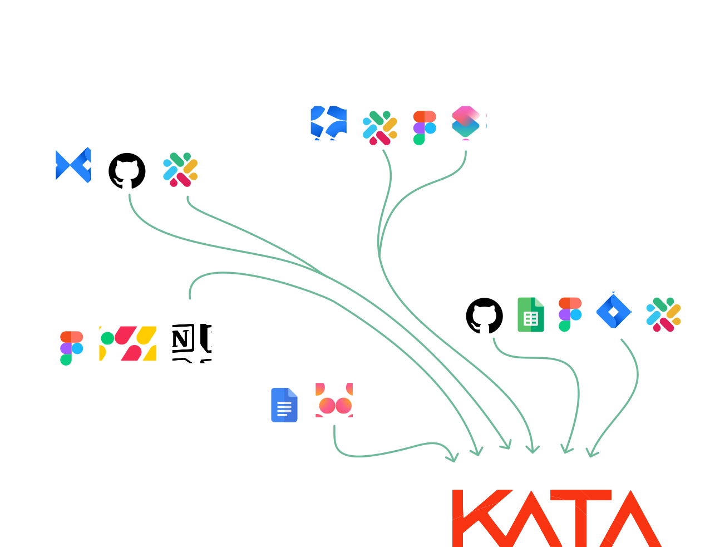
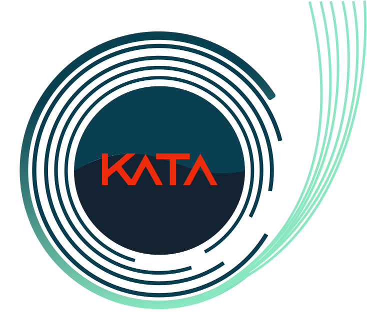

KATA is a single source of truth that cuts through all the noise, and lets people focus on the priorities that really matter.
Let your teams do great work in their preferred tools.
KATA gives leaders a dynamic, real-time overview of all projects, disciplines, and effort.
More than ever, employees value transparency, purpose, and instant access to information.
Stay fast & lean at any scale
Return on Effort
For the first time, instantly see how much effort you’re investing in each project.
Collaboration
Siloed teams see how their work fits into the larger business objectives.
Visibility
KATA merges accountability, efficiency, and vision for leaders and teams.

At Shopify, we obsessed about staying fast as we grew. So much so that we built our own internal tool to create a social protocol for work. Everyone, from the intern to the CEO, used the same tool to see who’s working on what and why. It made us 10x better. KATA is the new, improved version of that tool. Now available for everyone, and more deeply connected to the tools teams work in.
Jean-Michel Lemieux, former CTO at Shopify and VP Engineering at Atlassian